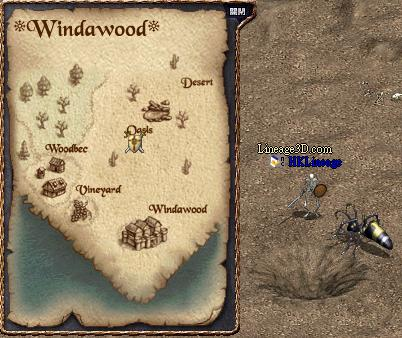

|
角色資料
建議角色能力值 | 變身速度表
| LC變身資料 | 經驗值表
| 體力上升表 | 魔力上升表
| 衝防衝武表 | 能力值解說
各職業30級任務攻略流程
來源：Nue's Lineage，Lineage
Compendium
以下內容取自Nue's
Lineage，部分內容加入了Lineage
Compendium的提示。
大家必須完成15級的任務方可開始30級的任務。
王族
1. 到風木村找阿里亞接受打擊巨蟻女皇的任務。
2. 到以下位置的蟻洞（32792,33255)：

3.
下去後會看到搜查瑪那，變身為巨蟻（要重登）再和牠說話，然後向左行直到找到到看守螞蟻，變身成巨大兵蟻（變身後需要重登）在跟他對話，就會知道巨蟻們正在對抗變種巨蟻，並接受傳送往變種巨蟻洞，去剷除變種巨蟻族。
4.
到了變種巨蟻洞後，立即變其他怪物並裝備回防具和武器，並前往挑戰變種巨蟻女皇。
PS: 變種巨蟻女皇十分強悍，請多準備藥水，變種巨蟻女皇身邊會有變種巨大兵蟻守護。
5. 打倒變種巨蟻女皇後，可獲得村民的遺物。
6. 帶著村民的遺物回風木村，並交給阿里亞，即可得到阿里亞的獎賞。
7. 打開阿里亞的獎賞，即可得到魔法書(呼喚盟友)(暫時未正式生效)和君主的威嚴(-2防斗篷，王族專用，所有能力值+1)。
| 圖示 |
中文名稱 |
說明 |
 |
村民的遺物 |
|
 |
阿里亞的獎賞 |
|
|
魔法書(呼喚盟友) |
|
 |
君主的威嚴 |
-2防斗篷，王族專用，所有能力值+1 |
騎士
1. 到沙漠綠洲找馬克，和他對話後，他會要你去找甘特。
2.
到說話之島找甘特接受試練，他會要去取得楊果里恩的爪子來給他。
(由於官方忘記在更新檔中放上甘特的中文對話檔，假如甘特的說話是空白的話，大家可以鍵入"/lang
english"將遊戲語系轉做英文再和他對話，其後可以鍵入"/lang
chinese"將語系轉回中文。當然你亦可以重新下載及安裝1.93完全版。)
3.
在島上找到楊果里恩，並擊敗牠，可得楊果里恩的爪子，大約20掉1。
4. 把楊果里恩的爪子交給甘特後可得到紅騎士之劍(8/12單手武器，全職，力量+1)。
5. 甘特會要你從食人妖精身上得到秘室鑰匙。
6. 在地7打到秘室鑰匙後（大約30掉1），到在歐林房間並雙擊秘室鑰匙，然後便會傳送往右邊的秘室，開啟後駿等著你來接受任務。
7. 駿會要你到銀騎士之村找傑瑞德取得返生藥水。
8. 找到傑瑞德後，他會告訴你關於痛苦之路的試練，完成後才要給你返生藥水。
PS: 你只能攜帶一瓶翡翠藥水和紅騎士之劍，來進行此痛苦之路的試練。
9.
進入銀騎士之村上方的洞窟後，立即去尋找蛇女房間鑰匙，大家可以殺掉綠色的蛇女取得。
10. 找到後，再回到入口附近找到蛇女的房間，開門進入，並擊敗蛇女，可取得蛇女之鱗。
11. 把蛇女之鱗交給傑瑞德後可得到返身藥水。
12. 去古魯丁地下監獄 -7F- 的秘室，找駿，並將返身藥水交給他，可取得感謝信。
13. 把感謝信交給傑瑞德後，及可得到紅騎士盾牌(-2防盾牌，安定值6)。
| 圖示 |
中文名稱 |
說明 |
 |
楊果里恩的爪子 |
|
 |
紅騎士之劍 |
8/12，單手武器，鐵製，全職，力量+1 |
 |
秘室鑰匙 |
|
|
蛇女房間鑰匙 |
|
 |
蛇女之鱗 |
|
 |
返生藥水 |
|
|
感謝信 |
|
 |
紅騎士盾牌 |
-2防，盾牌，騎士專用，安定值6 |
妖精
1. 先和森林之母對話，然後找精靈公主(大約在森木之母的東南方的大樹旁)接受打擊達克馬勒的任務，她將會幫你傳到達克馬勒的洞窟裡（假如看到黑妖的話，請傳走再試，有元素精靈的才是正確的房間）。
2. 接者打敗達克馬勒，即可獲得受詛咒的精靈書。
PS: 達克馬勒會召喚數隻屬性精靈來保護他自己，所以請多準備些藥水，建議最少要使用橙水。
3. 把受詛咒的精靈書交給迷幻森林之母，即可得到精靈的寶物。
4. 打開精靈的寶物，即可得到精靈水晶(召喚屬性精靈)和精靈T恤(0防T恤，妖精專用，安定值6)。
| 圖示 |
中文名稱 |
說明 |
 |
受詛咒的精靈書 |
|
|
精靈的寶物 |
|
 |
召喚屬性精靈 |
|
|
精靈T恤 |
0防，T恤，妖精專用，安定值6 |
法師
1. 到說話之島找吉倫，他會要你去冒險洞窟找到不死族背叛者。
2. 找到不死族背叛者後，擊敗牠，有可能會不死族的鑰匙，大約20隻掉1。
3. 然後再冒險洞窟出口附近找一個小孩子，要求進去密秘通道(在裡面不能使用任何裝備或道具，只能使用回卷，同一時間只能有一人進去)。
4. 第一個房間，有一隻人形僵屍，擊敗牠(只能用起死回生)，可得僵屍鑰匙。
5. 第二個房間，有阿魯巴，相消他後，他會變回骷髏，擊敗牠(只能用起死回生)，得到骷髏鑰匙，可前進下一個房間。
6. 第三個房間，有一隻妖魔僵屍，有三隻人形僵屍，擊敗妖魔僵屍(只能用起死回生)，然後對他使用造屍術，並將他引到地板上，樓梯門會打開，可前進下一個房間。
7. 最後一個房間，有一隻死神，擊敗牠(只能用起死回生)，可得不死族骨頭。
8. 把不死族骨頭給吉倫，他會幫你製成不死族骨板。
9. 去古魯丁地下監獄 -7F-，找歐林購買神秘水晶球。
10. 回說話之島找吉倫，拿神秘水晶球跟他換取神秘魔杖，再前往象牙塔。
11. 到了象牙塔後，把不死族骨板和神秘魔杖給塔拉斯，可得水晶魔杖(裝備後可加快魔力回覆量)。
| 圖示 |
中文名稱 |
說明 |
|
不死族的鑰匙 |
|
|
僵屍鑰匙 |
|
 |
骷髏鑰匙 |
|
 |
不死族骨頭 |
|
 |
不死族骨板 |
|
 |
神秘水晶球 |
|
 |
神秘魔杖 |
|
 |
水晶魔杖 |
1/1，法師專用，裝備後可加快魔力回覆量 |
|